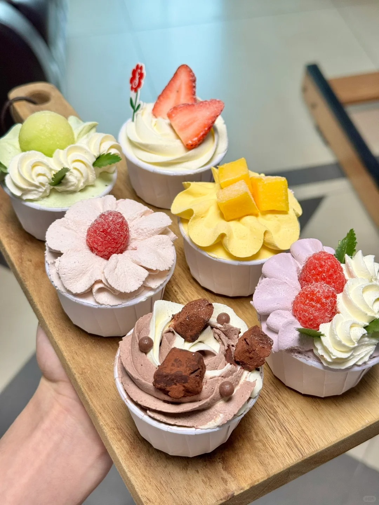
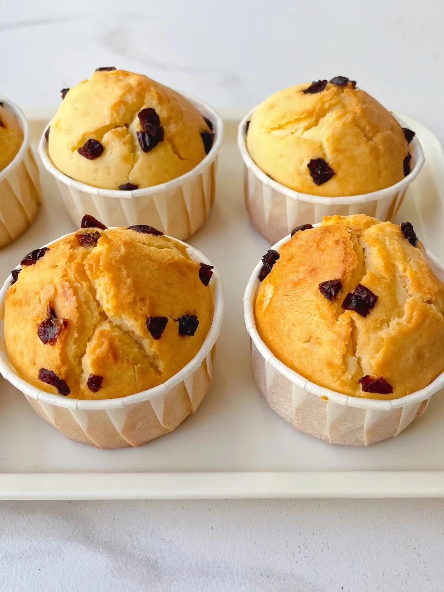
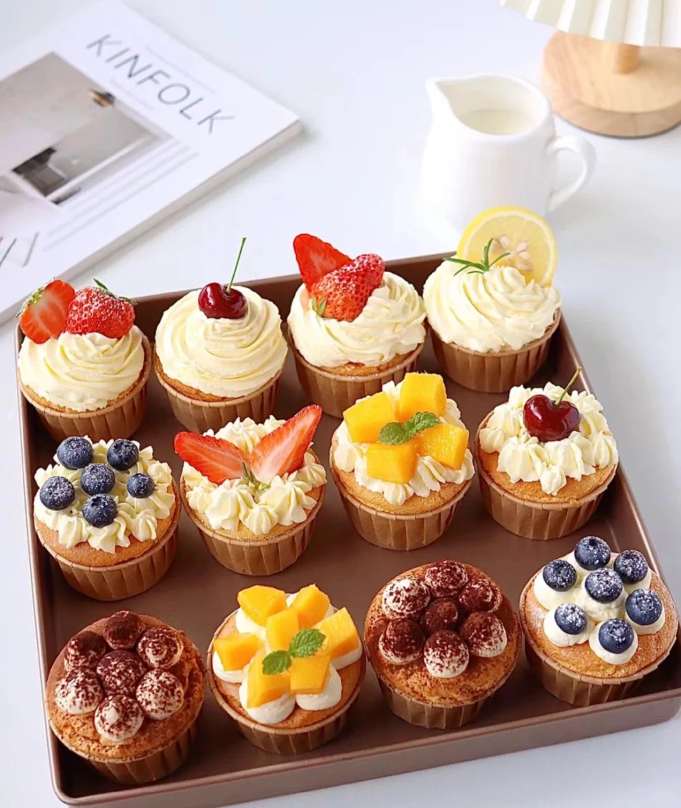

杯子蛋糕



杯子蛋糕，又称纸杯蛋糕，是一种以小纸杯或铝杯为模具烘烤而成的单人份蛋糕，与苹果派并列为美国最具代表性的甜点之一。杯子蛋糕种类丰富，口味多样。常见的有原味杯子蛋糕，口感松软，带有淡淡的蛋香和奶香；巧克力杯子蛋糕，浓郁醇厚；还有抹茶杯子蛋糕、草莓杯子蛋糕等，分别具有抹茶的清新和草莓的香甜。在装饰上，有简约的奶油裱花款，也有精致的翻糖装饰款等。 杯子蛋糕的历史可追溯到 1796 年，美国厨师阿米莉亚・西蒙斯在其著作《美国烹饪》中记载了 “在小杯子里烘烤的轻质蛋糕” 的食谱。1828 年，费城人伊丽莎・莱丝莉在《75 道酥皮点心、蛋糕和甜点食谱》中首次使用了 “杯子蛋糕” 这一术语。1919 年，美国烘焙公司 Hostess 开始大规模生产和销售巧克力杯子蛋糕，使其成为广受欢迎的零食蛋糕。
制作方法：